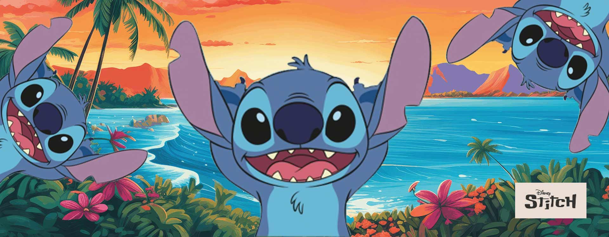

About Stitch
Stitch, also known as Experiment 626, is a lovable alien created to cause chaos across the galaxy.
Stitch in his new tropical home of Hawaii!
Ohana means family!
- Lilo Pelakai
- Nani Pelekai
- Scrump
- Jumba Jookiba
- Pleakley
Stitch's Favorite Things:
These favorites of Stitch always help him keep his goodness level high and badness level low! Click on the links below to read more about them: